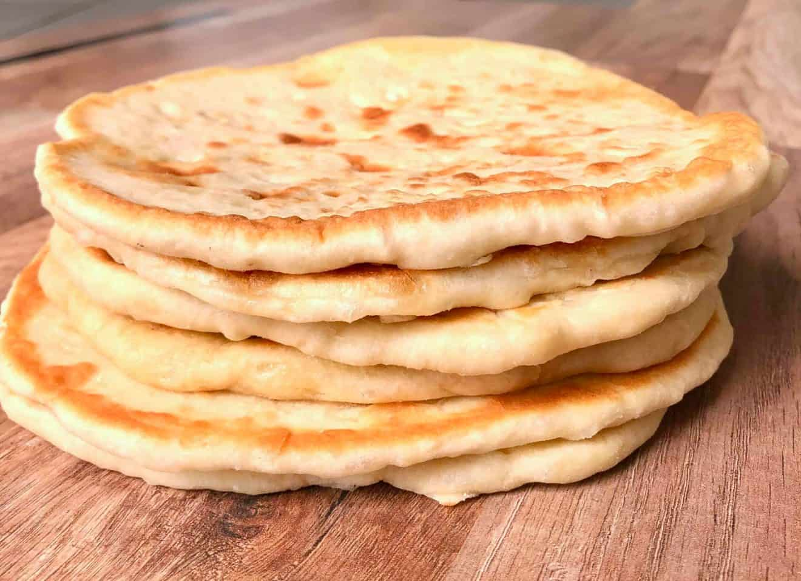

Greek Pita Bread

If you like your pita bread soft, fluffy, and authentic, then this super easy pita bread recipe is made for you!
360gwarm water (95-100°F)2 tspinstant yeast1 tspsugar520gflour, white, whole wheat, or 50/501 tspsalt
Add all the ingredients and mix at medium for 6-8 minutes. If using a bread machine add all ingredients (start with water and end with salt on top of the flour), and select the dough setting.
Cover and let it sit in a warm place until it doubles in size, about 1 hour.
Take the dough out of the bowl and gently deflate with your hands. Use just a tiny bit of flour to help you if it is too sticky. Split into 6 evenly sized balls, around 145g each.
Let the pita bread balls rest for 15 minutes before shaping. This is the second proof and will allow your dough to relax and become easier to shape.
To form the pita bread, you can either use a rolling pin, or stretch it with your hands, about 20cm in diameter. Make sure it’s very thin since it will puff up in the pan later. A rolling pin will make a crunchier pita, while hand stretching a softer, fluffier one. If the dough springs back, set it aside for a few minutes to rest and then continue rolling again.
Heat a non-sticking frying pan to medium heat and add just a little bit of olive oil and wipe off any excess. Bake each pita bread for about 2-3 minutes on each side, until slightly coloured and still soft. If your pan has a lid, place the lid on while baking them to keep the moisture in.
To give it more color, when you flip your pita bread, push it lightly with a wooden spoon on the pan.